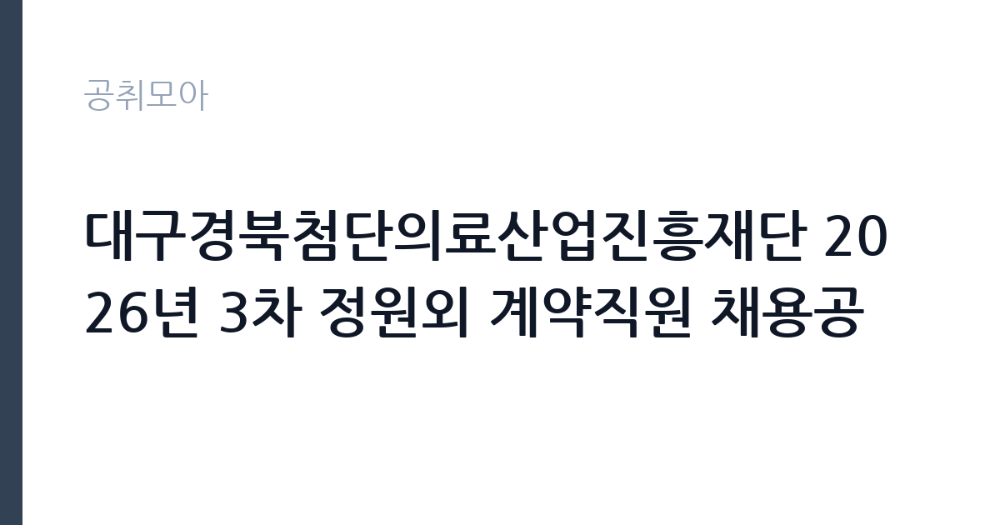

[공공기관] 대구경북첨단의료산업진흥재단 2026년 3차 정원외 계약직원 채용공
대구경북첨단의료산업진흥재단 · 대구 · 마감 2026-11-17 (D-15) · 출처 잡알리오

한눈에 보는 모집 조건
| 기관 | 대구경북첨단의료산업진흥재단 |
|---|---|
| 공고명 | 대구경북첨단의료산업진흥재단 2026년 3차 정원외 계약직원 채용공 |
| 고용형태 | 기간제 |
| 근무지 | 대구 |
| 게시일 | 2026-11-03 |
| 마감일 | 2026-11-17 (D-15) |
지원자격, 이렇게 읽으세요
- 위촉연구원 : 성별 및 지원자격 제한 없음
- 기간제근로자 : 채용분야별 지원자격을 있을 경우 지원자격을 만족하는 자, 그 외 성별 및 지원자격 제한 없음
- 장애제한경쟁의 경우 공고문상의 자격요건 충족자
기간제 근로자는 근로계약 기간이 정해진 신분입니다. 계약 기간과 갱신 가능 여부가 근로계약서에 명시되며 기간 만료 시 근로관계가 종료됩니다. 결원 보충이나 특정 사업 기간에 맞춰 채용되는 경우가 많아 업무 범위가 명확합니다. 이번 공고는 대구경북첨단의료산업진흥재단에서 직접 진행하는 자체 전형으로, 응시자격과 제출서류는 공고문에 항목별로 제시됩니다. 위촉연구원은 별도 지원자격 제한을 두지 않지만 과제별로 요구 전공이 붙는 경우가 있고, 기간제근로자는 채용분야별 지원자격이 있을 경우 그 요건을 충족해야 합니다. 체험형 청년인턴은 임용예정일 기준 만 34세 이하여야 합니다. 장애 제한경쟁 분야는 공고문의 자격요건을 함께 충족해야 합니다. 병역은 마쳤거나 면제되어야 하며, 임용예정일 전일까지 병역을 마칠 예정인 사람도 지원할 수 있습니다. 채용분야별 응시자격은 공고문에서 확인해야 합니다. 서류는 접수 마감 이후 보완이 되지 않으므로 자격 요건과 증빙 서류를 마감 전에 모두 갖춰야 합니다. 공고문에 명시된 우대 사항은 해당 여부를 확인해 증빙을 첨부해야 가점이 반영됩니다. 우대 사항에 해당하면 증빙을 반드시 첨부해야 하며, 누락하면 가점 없이 평가됩니다. 이 공고 원문에 적힌 응시 조건 문구는 '위촉연구원 : 성별 및 지원자격 제한 없음' / '기간제근로자 : 채용분야별 지원자격을 있을 경우 지원자격을 만족하는 자, 그 외 성별 및 지원자격 제한 없음' / '체험형청년인턴 : 임용예정일 기준 만 34세 이하인 자, 성별 제한 없음'입니다. 문구를 그대로 읽고 본인 해당 여부를 하나씩 표시해 두면 서류 단계에서 탈락하는 일을 줄일 수 있습니다.
이 공고의 포인트
이 공고의 첫 번째 포인트는 고용 형태입니다. 계약 기간이 정해져 있어 근무 종료 시점이 명확합니다. 그만큼 짧은 기간에 어떤 실적을 남길지가 중요해집니다. 두 번째는 업무 범위가 명확하다는 점입니다. 정원외 계약직(위촉연구원·기간제·인턴) 직무로 채용되므로 배치 이후 담당 업무가 크게 흔들리지 않습니다. 세 번째는 근무지입니다. 대구 지역 근무로 수도권 공고에 비해 지원자 분포가 넓지 않아 상대적으로 경쟁이 분산되는 경우가 있습니다. 채용 규모가 크지 않아 면접 비중이 높은 전형이 될 가능성이 있습니다. 같은 직무로 함께 올라온 공고 가운데 접수 마감이 가장 늦은 편이라 준비 시간을 상대적으로 확보할 수 있습니다. 선발 인원은 공고문에 명시되어 있으니 모집분야 항목을 함께 확인하십시오.
전형은 어떻게 진행되나
1차 서류, 2차 면접의 2단계로 진행되는 구성이 일반적입니다. 서류에서는 자격 요건과 경력 증빙을 확인하고, 면접에서는 실제 업무 수행 능력과 조직 적응을 봅니다. 직무에 따라 필기시험이나 실기, 컴퓨터 활용 시험이 추가되기도 하므로 공고문의 전형표를 먼저 확인하십시오. 단계별로 합격자만 다음 전형에 응시할 수 있고, 단계마다 응시 자격 확인 서류를 다시 제출해야 하는 경우가 있습니다. 최종합격자 발표 후에는 신원조회와 채용 신체검사가 남아 있습니다. 자격증 취득 예정자로 지원했다면 취득 증명 제출 기한을 반드시 지켜야 합니다.
원문에서 확인한 전형 방식
□ (자격요건) - 위촉연구원 : 성별 및 지원자격 제한 없음 - 기간제근로자 : 채용분야별 지원자격을 있을 경우 지원자격을 만족하는 자, 그 외 성별 및 지원자격 제한 없음 - 체험형청년인턴 : 임용예정일 기준 만 34세 이하인 자, 성별 제한 없음 * 장애제한경쟁의 경우 공고문상의 자격요건 충족자 □ (병역) 병역필 또는 면제받은 자 ※ 임용 예정일 전일까지 병역의무를 마치는 것이 예정되어 있는 사람도 응시 가능함 ※ 채용분야별 응시자격은 공고문 참조
이런 분께 추천해요
- 지원 분야의 자격 요건을 충족하는 분
- 의료·바이오 분야 연구나 사업 운영 경험이 있는 분
- 신분별 근무 기간을 확인한 분
지원 전 체크리스트
- 응시자격 요건과 경력 기준을 충족하는가 — 경력은 증명서로 입증해야 합니다
- 계약 기간과 근무 시작일·종료일을 확인했는가
- 제출서류 목록을 모두 준비했는가 — 누락 시 서류 단계에서 탈락합니다
- 접수 마감 2026-11-17 이전에 접수 방식을 확인해 제출했는가
모집 일정과 제출 타이밍
공고 게시일은 2026-11-03, 접수 마감은 2026-11-17입니다. 준비 기간은 약 14일로 서류 준비와 자격 증빙을 함께 처리하기에는 넉넉하지 않은 편입니다. 첫 이틀 안에 공고문과 첨부 서식을 내려받아 요건을 확인하고 남은 기간에 증빙 서류를 발급받는 일정이 현실적입니다. 면접은 서류 합격자 발표 후 짧은 간격으로 진행되는 경우가 많으므로 서류 제출과 동시에 면접 준비를 시작하는 편이 안전합니다. 마감일에는 접수 시스템이 몰리므로 하루 전까지 제출을 마치는 것이 좋습니다. 마감 이후에는 어떤 사유로도 접수가 인정되지 않으므로 하루 전 제출을 목표로 하십시오. 대구 근무지는 도심 접근성이 좋은 편이지만 시설에 따라 외곽 배치가 있을 수 있습니다. 마감까지 2주 안팎이 있어 준비할 시간은 있지만 미루면 촉박해집니다. 선발 인원은 공고문의 모집분야 항목에 직종별로 제시되어 있습니다.
직무 이해하기: 공공기관
대구경북첨단의료산업진흥재단은 의료기기와 신약 개발을 지원하는 보건복지부 산하 기관으로, 첨단의료복합단지에서 연구 지원과 기업 보육 사업을 수행합니다. 이번 3차 정원외 채용은 위촉연구원, 기간제근로자, 체험형 청년인턴을 함께 모집합니다. 위촉연구원은 과제 연구와 시험 분석을 맡고, 기간제근로자는 사업 운영과 시설·행정 지원을 담당하며, 청년인턴은 부서 업무 보조와 직무 체험을 합니다. 신분별로 근무 기간과 보수 기준이 다르므로 모집분야 표에서 본인 항목을 먼저 확정해야 합니다. 직무 교육은 입사 후 기관 자체 계획에 따라 진행되므로 사전 경험이 없어도 시작할 수 있습니다.
자기소개서 작성 팁
지원서는 지원 신분과 분야를 명확히 밝히고 그에 맞는 경험을 앞세우는 것이 핵심입니다. 위촉연구원은 연구 과제를 문제·방법·결과 순서로 정리하고, 기간제근로자는 사업 운영과 예산·행정 실무 경험을 수치로 제시하십시오. 인턴은 짧은 기간에 무엇을 배우고 기여할지 계획으로 쓰면 좋습니다. 문항별 글자 수 제한을 먼저 확인하고, 각 문항의 첫 문장에 결론을 배치하는 방식이 읽기 쉽습니다. 지원 동기는 기관의 어떤 사업에 기여하겠다는 한 문장으로 시작하고, 이어서 본인의 경험을 근거로 붙이십시오. 감점을 피하려면 다른 기관에 보낼 수 있는 범용 문장을 그대로 쓰지 않는 것이 중요합니다. 기관 이름과 사업명이 문장 안에 자연스럽게 들어가야 준비도가 드러납니다.
면접 준비 포인트
면접에서는 지원 분야의 실무와 연구 경험을 확인합니다. 위촉연구원은 수행 과제와 사용한 분석 방법, 도출한 결과를 구체적으로 답하십시오. 기간제근로자는 사업 운영과 행정 지원 경험을, 인턴은 배우려는 태도와 직무 관심을 보여야 합니다. 재단이 지원하는 의료산업 분야를 이해하고 있는지도 질문 대상입니다. 답변은 상황, 판단, 조치의 순서로 정리하면 전달이 분명해집니다. 모르는 질문에는 모른다고 밝히고 확인 방법을 제시하는 편이 억지 답변보다 낫습니다. 마지막에는 근무 의사와 함께 2026-11-17 이후 일정에 언제든 응할 수 있다는 점을 전달하십시오. 직무 특성상 체력이나 근무 시간에 대한 질문이 나올 수 있으므로 솔직하게 답하고 관리 계획을 함께 제시하십시오.
급여·근무조건 읽는 법
정원외 계약직 보수는 신분별로 다릅니다. 위촉연구원은 과제 인건비 범위에서 연봉이 정해지고, 기간제근로자는 재단의 기간제 임금 기준을, 청년인턴은 별도 인턴료 기준을 적용받습니다. 같은 공고 안에서도 총보수 차이가 크므로 본인 신분과 분야를 기준으로 계산해야 합니다. 구체적 금액과 계약 기간은 공고문 처우표에서 확인하십시오. 2026년 적용 최저임금은 시급 10,320원, 월 환산 2,156,880원(주 40시간·209시간 기준)입니다. 고용노동부 고시 제2025-47호로 확정된 금액입니다. 공고문에 금액이 제시되지 않은 항목은 원문 보수표나 처우 설명에서 확인해야 하며 확인되지 않은 수치는 쓰지 않는 것이 원칙입니다. 비교할 때는 월 급여뿐 아니라 상여·명절휴가비·복지포인트·초과근무수당까지 포함한 연간 총액으로 계산하십시오. 기간제라면 계약 기간 동안의 총액을, 무기계약이라면 호봉 상승과 정년까지의 누적 소득을 기준으로 판단하는 편이 정확합니다.
자주 묻는 질문
- 선발 인원은 몇 명인가요?
공고문의 모집분야 항목에 직종별 인원이 표로 제시되어 있습니다. 첨부된 공고문 원문에서 확인하십시오. - 근무지는 어디인가요?
대구 지역의 대구경북첨단의료산업진흥재단 소속 근무지입니다. 세부 주소와 출퇴근 조건은 원문 공고문에서 확인할 수 있습니다. - 보수는 얼마인가요?
채용 신분(기간제)과 기관 임금 규정에 따라 정해지며 구체적인 금액은 공고문 처우 항목에 제시됩니다. 금액이 공개되지 않은 경우에는 원문의 보수표를 확인하십시오.
함께 보면 좋은 공고
[공공기관] 2026년 한국특허정보원 체험형 청년인턴 채용 — 마감 2026-11-18[공공기관] 한국폴리텍대학 진주캠퍼스 행정지원직(사무직원 휴직 대체인력) 채용 공고 — 마감 2026-11-10[공공기관] [김해보훈요양원] 2026년 청년인턴(요양지원) 긴급채용공고 — 마감 2026-11-13출처: 잡알리오 공개정보를 바탕으로 공취모아가 정리한 안내글입니다. 모집 조건·일정은 변경될 수 있으니 지원 전 반드시 원문 공고문을 확인하세요. 본 글은 정보 제공용이며 합격을 보장하지 않습니다.